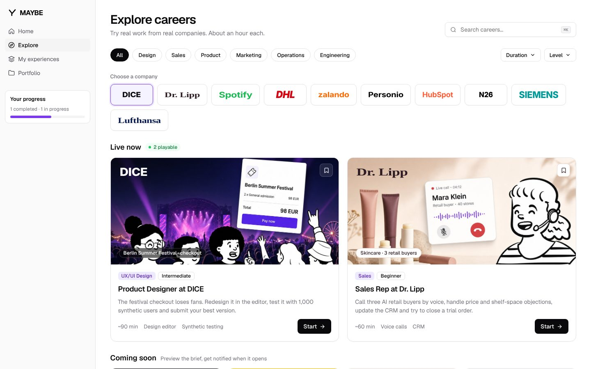
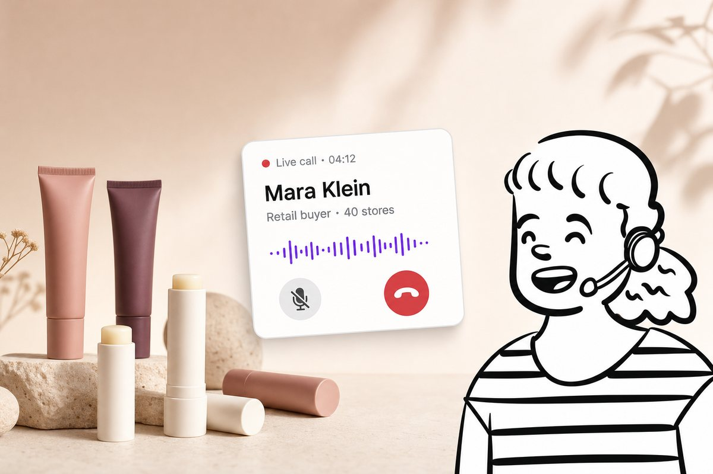
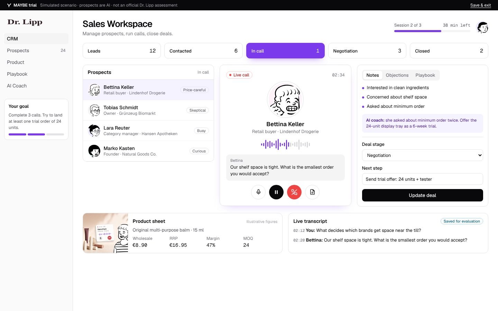
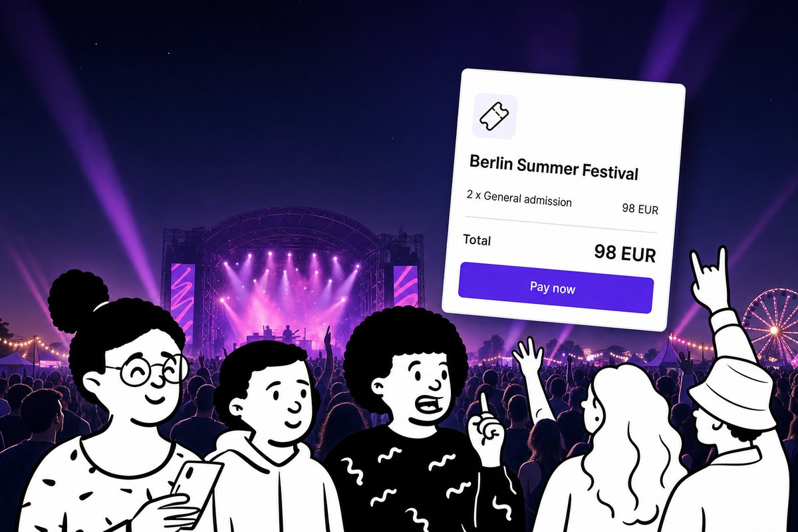
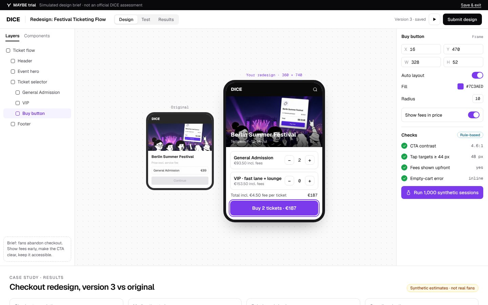
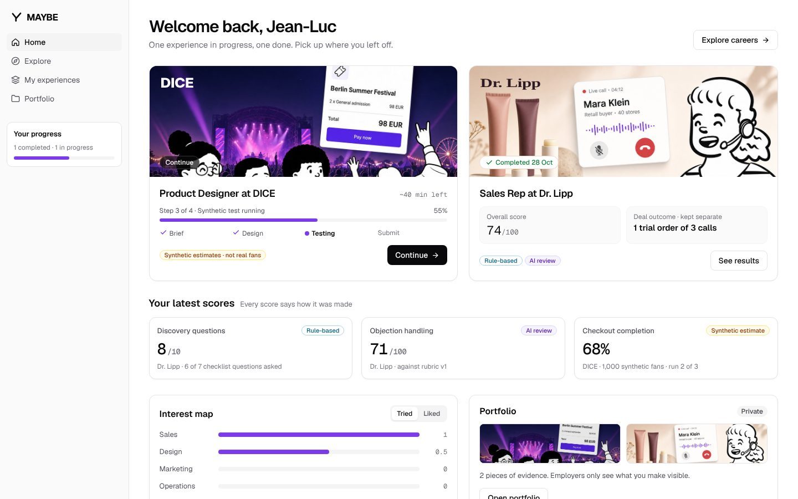
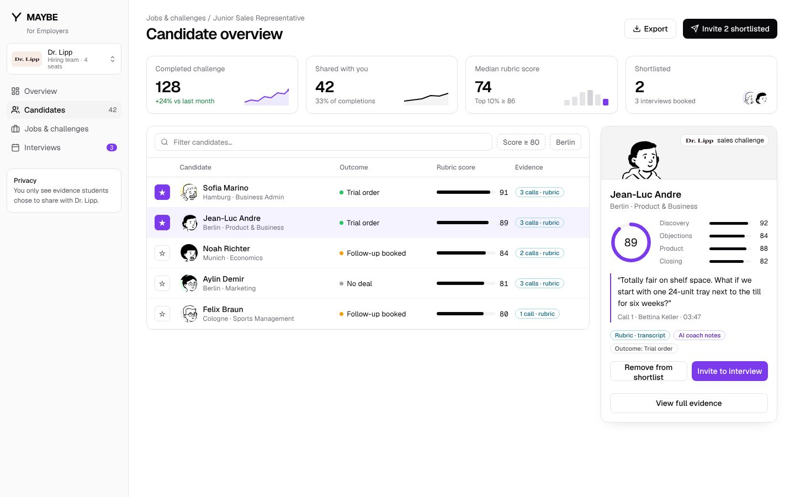

01 · The question
How are you supposed to know what you want to do with your life if you’ve never actually tried doing it?
02 · The experience gap
We spend years preparing for careers we may never actually experience.
Recent U.S. graduates, asked about the career they want.
of recent graduates say they’re already on it.
ZipRecruiter · Graduate Survey 2026name lack of experience as what stands between them and the career they want.
ZipRecruiter · Graduate Survey 2026
03 · The human cost
Graduating doesn’t necessarily mean knowing where you’re going.
call their current job a stepping stone.
ZipRecruiter 2026took a bridge job to cover expenses while they keep searching.
ZipRecruiter 2026reported mental-health difficulties when surveyed.
SMHR UK 2025 · 6,685 surveyedworry about money daily or weekly.
SMHR UK 2025 · 6,685 surveyed04 · The other side
But what about those who already know what they want to do? Those who have the skills and are ready to work?
Surely they get the chance to prove themselves.
Right?
05 · The screening
What if the right person never gets through the screening?
more applications from Black and Asian candidates would have advanced with equal recommendation rates.
Stanford · Algorithmic Monocultures in Hiring, 2026About 4 million applications from 3 million applicants, one vendor’s algorithms.
were rejected at least once last year without speaking to anyone.
Greenhouse · Candidate Survey, Oct 2026wish they could show employers something their application doesn’t.
Greenhouse · Candidate Survey, Oct 202606 · The turn
We have people who haven’t had the chance to discover what they can do, and people who struggle to get the chance to show it.
What if we used AI to create opportunities, instead of only filtering applications?
Macromedia × CODE Hackathon · 2026
MAYBE.
Try real work before you choose it.
By
Boris & Luc
08 · The problem
“Have you actually tried it?”
Students pick degrees and jobs from descriptions, not experience. We asked this at Stuzubi. Most students who named a career had never done any of the actual work.
Read about it
Job profiles, rankings, a week of filing in a Pflichtpraktikum.
Do it for an hour
The real task, with real tools, and feedback you can show.
09 · The idea
One-hour work trials, branded by real companies.
Not a career test. You do the job, the trial records what you did, and you decide what it means.
Curiosity
Pick a job you've wondered about from the marketplace.
Experience
Do the real task in a simulated company workspace.
Evidence
Scores with clear provenance, transcripts and files.
Direction
Compare trials, keep the proof, show employers.
10 · Live demo
Explore careers
Pick a company, read the brief, start. About an hour each.
- Two trials playable: DICE and Dr. Lipp
- More companies as previews you can follow
- Example companies, mockup only, no partnership implied

11 · Sales trial
MAYBE trial · SimulatedSell for Dr. Lipp
Call three AI retail buyers by voice. Handle objections. Keep the CRM clean. Try to land a trial order.


 MaraPotential buyer · AI
MaraPotential buyer · AI
13 · Design trial
MAYBE trial · SimulatedDesign for DICE
Fix the festival checkout in the editor, then test it with 1,000 synthetic fans.


14 · Honest scoring
Every score says where it came from.
Deterministic checks anyone can re-run.
Discovery questions asked, CRM fields complete, contrast passes.
Simulated users or buyers. An estimate, never “real fans”.
Checkout completion across 1,000 synthetic fans.
A model grading against a rubric you can open and read.
Objection handling, design rationale.
15 · For students
Keep the proof.
A dashboard of what you tried, what you liked and the evidence behind it. You choose what employers see.
- Progress across trials
- Portfolio of evidence, private by default
- Compare paths side by side

16 · For employers
Hire from work you can inspect.
Candidates who did your task, with transcripts, files and scores linked to a rubric.
Open a candidate's evidence
17 · Under the hood
How a trial works
Company brief
Task, constraints, assets, time box.
Rubric
Criteria, weights, provenance per criterion.
Voice agents as buyers
Personas with goals and objections; calls are transcribed.
Synthetic users
Simulated fans run the student's design and report drop-off.
Tools
CRM, design editor, notes. Every action is logged.
Scoring
Rule-basedSyntheticAI review
Portfolio and employer view
Shared only when the student says so.
Design system: MAYBE Product, shadcn/ui with zinc neutrals, one violet accent, Geist, hand-drawn Open Peeps (CC0).
18 · The market
Recruitment is a massive market under growing pressure.
estimated global market, forecast to grow 7.2% a year to 2035.
Grand View Researchreceive too many unqualified applicants.
iHire 2026 · 318 U.S. employerswant skills assessments from their recruiting platforms.
iHire 2026 · 318 U.S. employers19 · Why now
More applicants. Smaller recruiting teams. A shift toward demonstrated skills.
from 2022 to 2025.
Greenhouse · Hiring Benchmarks 2026over the same years.
Greenhouse · Hiring Benchmarks 2026of surveyed employers use it, up from 65% a year earlier.
NACE 202620 · The European opportunity
From 2 December 2027, hiring AI in Europe has to show its work.
Transparency
Documentation of how the system works.
Risk management
Plus appropriate data governance.
Human oversight
A person can understand and overrule it.
Fair outcomes
Evaluation of potentially unfair results.
Transparent, human-reviewed work evidence
Every score shows where it came from.
Rule-basedSyntheticAI review
A person makes the decision
Employers open the work itself, not a ranking.
Not a compliance claim: MAYBE’s own hiring evaluations may count as high-risk too. Source: European Commission, AI Act.
21 · The business
Free to explore. Paid by employers who want proof.
Explore for free
Free or accessible career exploration: try real work before choosing a degree or a job, and keep the evidence.
Pay for proof
- Job-specific work simulations
- Work-sample review and recruiting workflows
- Evidence-based candidate assessment
- Possibly a recurring software subscription
No pricing or hiring ROI is claimed yet. Both get tested in the pilots.
22 · What's next
Start small, with real students.
[Ask 1]
[What we need from the jury or partners]
[Ask 2]
[A company willing to host the first real trial]
[Ask 3]
[Pilot students or schools]
 Ask the agent anything
Try the prototype
Ask the agent anything
Try the prototype
Companies shown are examples. Mockup only, no partnership implied. Cover images are AI-generated.
23 · Back to the start
How are you supposed to know what you want to do if you’ve never tried it?
And how are employers supposed to recognize your potential if you never get the chance to demonstrate it?
For years, technology has helped companies decide who deserves a chance.
We’re building technology that gives more people the chance to prove themselves.
MAYBE.
Try it. Prove it.